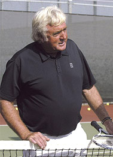
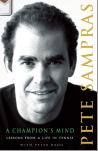

← Bài trước: The Lansdorp One-handed Backhand | 🏠 Famous Coaches Trang chủ | Bài tiếp: → Ball Awareness
Robert Lansdorp và tâm lý tay vợt vô địch
Robert Lansdorp
và tâm lý tay vợt vô địch
Pete Sampras với Peter Bodo
 |
|---|
| Học tập từ Robert Lansdorp đưa tôi vào thế giới quần vợt California. |
Chú thích biên tập: Đoạn trích độc quyền từ tự truyện mới của Pete Sampras kể về ảnh hưởng lâu dài của Robert Lansdorp đối với phong độ của Pete từ khi gia đình Sampras chuyển từ Maryland đến Palos Verdes, California năm 1978.
Ngay sau khi đến Palos Verdes, chúng tôi phát hiện ra đây là một môi trường giàu có về quần vợt. Câu lạc bộ Jack Kramer, đã đóng góp đáng kể trong việc phát triển nhiều tay vợt xuất sắc (bao gồm Tracy Austin), nằm gần đó ở Rolling Hills. Và có West End, nơi tôi bắt đầu học từ một trong những huấn luyện viên vĩ đại nhất mọi thời đại, Robert Lansdorp.
Tôi là một đứa trẻ nhút nhát, nhưng nếu bạn học từ Lansdorp, bạn sẽ ngay lập tức trở thành trung tâm sự chú ý và nhiều người sẽ theo dõi bạn. Có vẻ kỳ lạ bây giờ, nhưng ngay sau khi bắt đầu luyện tập, chúng tôi được nói rằng tôi sẽ trở thành một tay vợt xuất sắc. Ngay lập tức, mọi người bắt đầu so sánh tôi với những người như Eliot Teltscher, nói rằng tôi đã tốt như Eliot khi mới 14 tuổi, trong khi Eliot mới 16 tuổi. (Anh ấy tiếp tục có sự nghiệp chuyên nghiệp thành công, trở thành một tay vợt hàng đầu thế giới.)
Robert đặt nền tảng cho game sân của tôi.
Khi tôi đến tuổi teen, tôi tin rằng mình sẽ giành được Wimbledon và Giải Mở rộng Mỹ, điều này khá xa xỉ. Nhiều đứa trẻ được nói rằng họ xuất sắc, tin vào điều đó, làm việc theo hướng đó - và cuối cùng lại thất bại. Họ có thể không có tính cách phù hợp, tài nguyên thể chất lâu dài; họ có thể không thể chịu được những kỳ vọng, họ có thể có những khuyết điểm kỹ thuật, sự tận tâm hoặc cách tiếp cận sự nghiệp không thể vượt qua được. Ý tưởng rằng không có điều gì có thể xảy ra sẽ xảy ra là gần như không thể tin được - trừ khi nó không phải vậy.
Nhưng có lẽ sự tin tưởng của tôi rằng mình sẽ trở thành người như mọi người nói đã giúp tôi trở thành người như vậy. Tôi biết điều đó sâu trong lòng. Tôi có sự tự tin đó. Điều tuyệt vời là không có gì xảy ra để phá vỡ nó, làm mờ nó đi, hoặc lấy nó đi - và tôi đã trải qua rất nhiều điều có thể cướp đi cảm giác định mệnh của tôi.
Nền tảng của game sân của tôi được đặt bởi Lansdorp. Anh ấy là một biểu tượng trong các vòng quần vợt California, nổi tiếng với phong cách huấn luyện viên kiên nhẫn. Dấu ấn của anh ấy, và vẫn còn, trên những cú đánh sân xuất sắc nhất trong môn thể thao này. Gần như tất cả các tay vợt được Lansdorp huấn luyện đều phát triển cú thuận tay to lớn. Anh ấy dạy một cú đánh sân khá phẳng, sạch sẽ, tiết kiệm năng lượng, và đặc biệt là với các cô gái, bao gồm Tracy Austin, Lindsay Davenport, Melissa Gurney và Stephanie Rehe, tất cả đều là những tài năng trẻ và, theo từng mức độ khác nhau, thành công trong sự nghiệp chuyên nghiệp. Tay vợt nam xuất sắc nhất của Robert, cho đến khi anh bắt đầu huấn luyện tôi, là Eliot Teltscher. Một cách thú vị, Eliot trở nên nổi tiếng hơn với cú trái tay mạnh mẽ của mình, và đó là lý do tại sao tôi nói rằng mỗi tay vợt đều có những xu hướng tự nhiên tiên đoán phong cách của họ.
Robert là một người tốt, đã có những thành tích đáng kể khi chúng tôi gặp nhau. Robert có vẻ rất khắc nghiệt; anh ấy chắc chắn là người nói thẳng và trung thực. Nếu anh ấy không thích bạn, anh ấy không che giấu điều đó. Những đặc điểm này đã gây tổn hại cho anh ấy, nhưng anh ấy là một người cô đơn luôn kiên trì làm theo cách riêng của mình.
Tôi là một đứa trẻ làm việc chăm chỉ, và tôi kính trọng Robert. Anh ấy làm tôi sợ hãi. Anh ấy là một người lớn với bàn tay khổng lồ và một phong cách rất khắc nghiệt. Buổi học của tôi là vào thứ Năm, và tôi nhớ mình đang ở trường và cảm thấy hơi lo lắng, nhìn vào đồng hồ, vì tôi có Robert từ 3 giờ chiều đến 4 giờ chiều, và mặc dù tôi thích học từ Lansdorp, tôi cũng không thể chờ đợi cho đến khi buổi học kết thúc.
Một thiên tài trong việc cung cấp bóng.
Khi tôi bắt đầu chơi, đó vẫn là thời đại vợt gỗ, và Robert đã dạy tôi cách đánh đúng cách. Một vài năm sau, công nghệ sẽ biến đổi vợt quần vợt cơ bản, và cuối cùng sẽ dễ dàng hơn cho mọi người phát triển vũ khí. Nhưng tôi đã định hình vợt của mình bằng cách khó khăn. Một số việc chúng tôi làm rất cơ bản. Robert sẽ mở nắp vợt - lúc đó, nó chỉ là một túi da mềm, có khóa kéo che đầu vợt xuống đến cổ vợt - đặt chìa khóa của anh ấy bên trong và đóng lại trên đầu vợt. (Robert luôn có khoảng bốn mươi chìa khóa, vì vậy dây chìa khóa của anh ấy nặng như một cái xẻng.) Sau đó, tôi sẽ luyện tập cú đánh sân với vợt có trọng lượng. Đối với một đứa trẻ, điều đó rất khó khăn, nhưng nó đã dạy tôi cách truyền sức mạnh qua bóng. Với Robert, mọi thứ đều xoay quanh điểm đánh chính xác và truyền sức mạnh qua bóng.
Không có kỹ thuật bí mật nào trong danh mục của Lansdorp. Điều lớn nhất của anh ấy là sự lặp lại, có tác dụng phụ quan trọng: nó dạy cho tôi sự kỷ luật trong việc đánh vợt. Robert có một chiếc xe đẩy siêu thị lớn, đầy bóng, và bất cứ điều gì chúng tôi đang làm - chuẩn bị, đánh bóng ngắn ở giữa sân, cú đánh sân chạy trở thành cú đánh đặc trưng của tôi - chúng tôi sẽ làm trong một giờ, hoặc nửa giờ của tôi mà tôi chia sẻ với Stella. Chúng tôi làm các bài tập một lần, một lần nữa, một lần nữa.
Cú đánh sân chạy của tôi hoàn toàn là của Robert.
Eliot Teltscher nghĩ rằng Robert có thiên tài trong việc cung cấp bóng - một công việc mà bạn không nghĩ là khó. Nhưng Eliot đúng; Robert đặt bóng vào đúng vị trí, lần sau lần lại. Và chúng tôi đang nói đến hàng trăm quả bóng mỗi giờ, ngày sau ngày. Tôi đã đánh một triệu quả bóng và điều đó rất quan trọng - tôi phải có bộ nhớ cơ bắp, đốt nó vào để nó trở thành một điều tự nhiên.
Một trong những thủ thuật yêu thích của Robert là đánh những cú đánh sân xoáy cuộn lớn ngay vào tôi, làm tôi bị chặn. Và nhớ lại, đây là một người đàn ông lớn, nặng hơn hai trăm pound, đánh với một đứa trẻ mười hai tuổi. Phòng thủ những cú đánh đó đã dạy tôi cách đứng vào và đối mặt với anh ấy, trao đổi cú đánh. Điều đó đã làm tôi trở nên mạnh mẽ hơn. Robert sẽ đứng ở một vị trí ưu tiên cho một chân để anh ấy có thể lấy bóng từ xe đẩy nhanh chóng bằng một tay và cung cấp bằng tay kia trong nhiều giờ. Tôi thề rằng anh ấy phải phẫu thuật hông vì vị trí đó. Anh ấy sẽ đứng ngay giữa đường trung tâm và đánh những cú đánh sân lớn qua sân trong khoảng mười lăm phút liên tục. Điều đó rất mệt mỏi.
Cú đánh sân chạy của tôi hoàn toàn là của Robert, và cũng vậy với phiên bản của tôi về cú đánh sân cận sân từ giữa sân - một trong những cú đánh khó nhất và ít được chú ý nhất trong quần vợt. Cú đánh này có thể là một cú đánh kết thúc, một cú đánh cận sân, hoặc một cú đánh trong trận đấu. Nó khá khó vì nó dễ dàng hơn khi bạn di chuyển bên trái và bên phải so với đi về phía trước và phía sau. Khi bạn di chuyển vào sân, bạn phải có đủ xoáy cuộn trên cú đánh đó để vượt qua lưới, nhưng che phủ đủ để có được tốc độ và độ sâu tốt (và không đánh dài).
Cú đánh sân của tôi thay đổi rất ít trong suốt những năm.
Tôi đã thay đổi một chút cú đánh sân của mình trong suốt sự nghiệp chuyên nghiệp, sử dụng một chút xoáy cuộn hơn để tăng lề lỗ của mình. Nhưng nó đã thay đổi rất ít trong suốt những năm, và nếu một trong những con của tôi quyết định muốn chơi quần vợt, và Robert vẫn còn trên sân, anh ấy sẽ là người tôi sẽ hỏi để dạy nó. Một vài năm trước, tôi đang ở câu lạc bộ Riviera, nơi Robert đang dạy lúc đó, và anh ấy yêu cầu tôi đánh với một đứa trẻ mười hai tuổi mà anh ấy đang phát triển. Tôi đã giúp anh ấy và không nghĩ gì đến điều đó cho đến khi vài năm sau tôi nhận ra cô gái trên truyền hình; đó là Maria Sharapova. Robert có một mắt nhìn sắc sảo về tài năng. Anh ấy cũng giỏi trong việc hiểu thấu đáo ai "có nó" - ai có tiềm năng và ý chí để trở thành vĩ đại, về mặt tâm lý. Anh ấy hiểu tính cách và trái tim của bạn. Nhưng chúa ơi, anh ấy rất khắc nghiệt!
Peter Bodo là một trong những nhà báo quần vợt nổi tiếng và được kính trọng nhất thế giới. Anh ấy là biên tập viên cao cấp và cột viết hàng đầu của tạp chí Tennis, và đã viết cho Tennis trong hơn 30 năm. Ngoài việc cộng tác với Pete Sampras trong tự truyện của anh ấy, Peter đã viết nhiều tác phẩm về mọi thứ từ tour quần vợt chuyên nghiệp đến câu cá cá hồi Đại Tây Dương. Tiểu thuyết của anh ấy "The Trout Whisperers" sẽ được xuất bản vào cuối năm nay. Bodo sống ở Thành phố New York với vợ Lisa và con trai Luke ba tuổi, nhưng thích lang thang dọc theo dãy núi Catskill để săn bắn và câu cá gần trang trại của anh ấy ở bang New York phía bắc.
Nhấp vào đây để đọc Blog của anh ấy trên Tennis.com, TennisWorld của Peter Bodo!
 |
Trong tự truyện mới này, "A Champion's Mind: Lessons from a Life in Tennis," Pete Sampras kể câu chuyện bên trong đáng kinh ngạc về cách anh trở thành tay vợt xuất sắc nhất trong lịch sử quần vợt và cuộc sống như thế nào ở đỉnh cao thế giới quần vợt. Không giống như các tiểu sử nổi tiếng của tôi, cuốn sách này đáng chú ý vì sự chân thành và chi tiết, khi Pete chia sẻ quan điểm thẳng thắn của mình về gia đình, huấn luyện viên, các tay vợt khác, hôn nhân và truyền thông, được thấm nhuần suốt cuốn sách bằng sự hài hước khô khan đặc trưng của anh ấy. Đọc rất thú vị cho bất kỳ ai quan tâm không chỉ về cuộc sống và thời đại của nhà vô địch vĩ đại này, mà còn về sự phát triển của môn thể thao quần vợt hiện đại.
Nhấp vào đây để đặt hàng.
← Bài trước: The Lansdorp One-handed Backhand | 🏠 Famous Coaches Trang chủ | Bài tiếp: → Ball Awareness